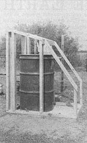
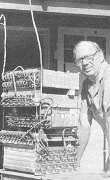
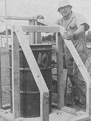
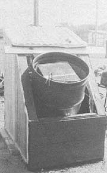
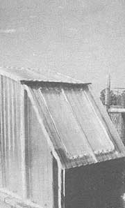
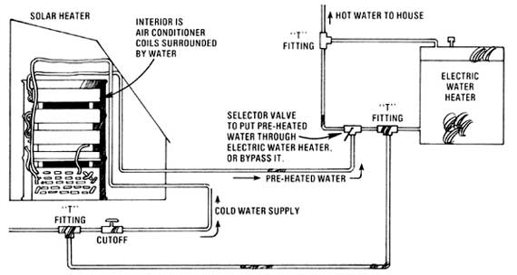

"The little fellow seldom slays the giant," says north Texas resident Doyle Akers. "Not really. Not since David laid it on Goliath anyway. But it sure is fun when we little guys (MOTHER-type homesteaders) get to tweak the giants' (the big power companies) toes from time to time."
My wife Georgia and I moved out to our little homestead ten years ago because we value an independent way of life. We've found, however-as so many others have-that life (independent or not) carries an increasingly large price tag these days.
So we've learned to scrounge and barter for many of the things we need . . . and to use our own country ingenuity to provide much of the rest.
We patch our clothes and turn out the lights when they aren't needed. We swap for used tools and other items, and then repair them. We carry home the smashed 2 X 4's we find alongside the road, cut out the good parts, and use the lumber in various ways around the place. And we notice the blistering-hot water which comes out of a plastic hose that's been left lying in the sun . . . and wonder if we can't use the idea to help at least one David (our little homestead) tweak the toes of at least one Goliath (by lessening our mini-farm's consumption of the local big power company's high-priced electricity).
Well, we can. And we know because Georgia and I have been doing just that for over a year now. Not all the time and not in a polished, state-of-the-art fashion. But-for a total investment of only $30 and a week of slow going-we now have a solar water heater which supplies us with almost all the hot water we can use seven months of the year. (And if we really wanted to, I don't think it'd be too hard to modify the setup so it'd operate on a year-round basis.)
Now I'm not an engineer, so I know my solar water heater isn't perfect mechanically. And I'm not an artist, so it isn't particularly pretty either. And I did make some mistakes-most of which are still stuck together with No. 8 box nails out there in the yard right now-when I put our sun-powered unit together.
But our water heater does work, its design is quite simple, I did mostly build it with salvaged and bartered materials, and I do figure that most anyone who can swing a hammer and screw two pieces of pipe together can do the same.
Except for some helpful articles in MOTHER, most of the information floating around about solar water heaters a year or so ago was entirely out of our reach. Sure, the ideas that the big industry and the big government engineers were coming up with would work . . . IF [1] you had an arm elbow-deep in some tax-supported treasury, [2] you wanted to build on some incredibly large scale, and [3] you were willing to wait somewhere between 15 and 20 years for a payoff on your investment.
I'm sorry. Georgia and I are homesteaders. We don't operate in that league. We can't afford arrays of roof panels, computer-controlled valves, sensor-activated switches, automatically operated pumps, and 1,000-gallon water storage tanks in the basement (we don't even have a basement).
What we can afford is recycled scrap lumber, bartered cement, and a little sand out of a nearby' riverbed. So that's what we used in our solar water heater. That, and this simple idea: Put something out in the sun, and it'll get warm. Paint it black, and it'll get warmer. Put a transparent or translucent cover over it and it'll get hotter yet.
We have hot, humid summers here in my part of north Texas . . . and winters that are often cloudy and disagreeable.
"Well," I thought, "I'm not an engineer, so I may not be able to design a solar-powered water heater that'll work year round. But I'll bet I can put one together that'll do the job through the spring, summer, and fall. I know that water gets hot in a hose when the hose is left lying out in the sun. If it'll work with a hose, it should work with a 55-gallon drum . . . especially if the drum is painted black. And if that barrel is enclosed in a sort of greenhouse . . . ." The photographs and drawing with this article tell most of the rest of the story.
I bartered a little of my time and energy welding up a neighbor's trailer hitch for a sack of portland cement . . . found some good sand in the bottom of the neighboring Red River . . . and mixed and poured a 32" X 44" slab of concrete.
This foundation is four inches thick around the edges and measures about two inches through out in the middle. (I've never been overly exact when it comes to construction dimensions.) I reinforced the slab with coat hangers from Goodwill Industries and left a hole four inches in diameter toward the front so I could run water intake and outflow pipes up into the finished water heater from underneath.
The concrete foundation was oriented north/south (so the finished water heater would face south, of course) with a magnetic compass. And the slab was located as close as possible to the electric water heater inside our house (since the sunpowered heater sometimes would be preheating water for the electric unit) yet not so close that the finished solar collector would be shaded by the building.
I framed up the water heater's walls from salvaged 2 X 4's . . . which was more or less a mistake. Next time I'll rip my framing down to 2 X 2 size. It'll go twice as far that way, and still be more than strong enough for a structure no bigger than the one we're talking about.
The north and east sides of the collector-building have "double walls" filled with fiberglass insulation (one of the few materials we bought new). The inside of those walls is also lined with ordinary aluminum foil to reflect heat back toward the center of the structure. The top, south (front), and west sides of the collector are covered with two layers of salvaged plastic patio roofing. As you can see, the front comes off so we can service the collector drum inside (although that hasn't been necessary, except for the startup/shutdown cycle we put the heater through each year).
The walls of our solar collector were built right around a barrel (Old Number 10) that we bought secondhand for $2.00. And, try as I might, I just couldn't think of any practical way to use hot water directly from the drum. "I'll simply have to come up with some sort of heat exchanger," I figured.
At first I thought of stuffing coils and coils of plastic hose into the collector drum and then filling the rest of the space in the barrel (around the loops of hose) with water. After that, I'd hook one end of the hose to our pressurized supply of cold well water and the other to our home's hot water outlets. That way, I calculated, the sun's heat would warm the water that always stayed in the barrel . . . which, in turn, would transfer a large part of its warmth to the water which flowed-on demand-through the coils of hose submerged in the tank.
While I liked the idea, I wasn't sure the loops of plastic hose would be as good a heat exchanger as . . . as . . . well, as a real heat exchanger made out of metal tubing and fins.
"Wait a minute," I told myself. "I repair air conditioners and I've got a whole bunch of old heat exchangers from junked air conditioners sitting around here. And even if I didn't already have them on hand, I know that worn-out air conditioners are available for the asking-or, at most, a dollar ad in the local paper-and the hauling away in every community in the country. Why can't I use the exchanger coils from a few old air conditioners in my solar water heater?"
"By gum," I answered myself, "I not only will do it that way . . . while I'm at it I'll go all the way. I won't just use one or two of the old exchanger coils in our heater . . . I'll cram in as many as the collector barrel will hold."
So I stacked up five salvaged air conditioner heat exchangers, connected 'em together with copper pipe (also scavenged from junked air conditioners), made all the joints watertight with silver solder (since "those who know" tell us that lead solder is dangerous when it leaches into drinking water), and put the whole core into the collector drum.
Experience has since shown that my one idea (of using old air conditioner coils for our solar water heater's exchanger) was a good one. My other brainstorm (cramming as many of the units as possible into the drum) wasn't. By the time our well water finds its way through the incredible labyrinth I've created, its pressure is so markedly reduced that it doesn't flow out of our hot water faucets as fast as we'd sometimes like. In short, the traditional American belief that "bigger is always better" isn't necessarily so. I'd probably have been a lot smarter if 1'd hooked just two of the exchangers together and installed them near the top of the collector drum where the captive water is always hottest.
Other than the inconvenience of reduced pressure which I've built into our supplemental water heating system, the setup works just fine. Cold water-which is piped into the bottommost coil submerged in our collector barrel-is warmed by the solarheated captive fluid which surrounds it. Then, as the water flowing through the stack of five submerged exchanger coils works its way on up through the connected heat exchangers, it's warmed even more by the hotter and hotter sun-heated captive water which surrounds the higher coils. By the time the flowing water comes out the top of the stack and starts for the faucets in the house, it can be as hot as 120° F.
That's right. "As hot as" 120°F . . . on an average summer day when the outside air temperature is 95°. During the night which follows, though, the temperature of our solar-heated water will drop down to just over 100°. A catastrophe? Not really. Georgia and I have always preferred a bedtime shower to one in the morning anyway, so we've only had to make one real adjustment in our schedule to accommodate this daily swing in the temperature of the solar-heated water: I've learned to shave at noon, instead of first thing in the morning . . . and that adjustment certainly hasn't been a physical crippler.
Now I'm sure we can come up with something simple and inexpensive that will do away with even this minor inconvenience. Say, a movable panel of insulation that we can swing back during the day to allow the sun to shine on the solar collector . . . and then across the structure at night to hold the captured heat in. To tell the truth, though, our $30 water heater has worked so amazingly well right from its first day of operation . . . that I just haven't gotten around to thinking much about improving its day-to-day performance.
Nor have I given a great deal of thought to extending the water heater's annual useful season. Sure, we probably could fill our collector barrel with antifreeze or oil-instead of plain old water-and then use the heater year round without fear of freeze-ups. But oil might be a fire hazard and, besides, its heavier viscosity wouldn't transmit heat from the sun to the submerged exchanger coils as rapidly as water does. And more important yet, both oil and antifreeze are expensive. As the industrial efficiency experts like to say, "I think it's more costproductive to fill the collector drum with water once a year on April 1, enjoy virtually free hot water for the following seven months, and then drain the tank the first of November."
As the accompanying schematic shows, both this seasonal changeover and any "fine tuning" of our hot water supply that we care to make during the spring, summer, and fall are a snap . . . . thanks to a simple cutoff (bought for 50 cents from a local flea market) and selector valve (75 cents). Cold water from the well can't flow through the solar heater's coils until I open the valve on April 1. And any time the water which then passes through the solar heater isn't hot enough to suit us straight out of the tap . . . we can just switch the selector over, run the water through our electric heater, and give it an extra "boost". (Even when we do-about six times a season-of course, we're still saving both energy and money . . . since it's far easier to heat pre-warmed-rather than cold well-water.)
Interestingly enough, we don't "save" anything by not using our solar water heater during its season. We've tried closing the system down for a day or two in the summer and letting the drum's contents "cook" up to a higher temperature. Nothing doing. When we then drew water from the solar heater again, it was never any hotter than 120°. Maybe MOTHER's engineers can tell us why. The other side of the coin (the positive side), however, is just as interesting: We can use a great deal of hot water on a summer afternoon, and still have all we want that evening after the sun has gone down. Our solar-powered water heater's "recovery", in other words, is very rapid.
And, yes, the heater works fairly well even on cloudy days. The only time we had to switch over to our electric in-house unit during last year's seven-month "solar heating season" was on about six occasions when it rained more or less constantly for several days in a row.
And here's a worthwhile tip: If you ever recycle an old air conditioner exchanger coil into a solar water heater . . . be sure to flush out the salvaged coils first. I didn't and, for the first few days we used our new heater, oil (which had been put into the exchangers to lubricate the air conditioners' Freon) flowed out of the bathroom faucet with the hot water. As it spread in a pretty film across basin after basin of water I told Georgia that it was super-refined, sulfur-free, pure, and probably good for the complexion. She was not convinced, and we were both glad when the oil finally washed away.
(That oil, by the way, disappeared about the same time as the blue-green water that came out of our new heater during its first few days of operation. It must have been a chemical reaction between the traces of Freon/oil and the minerals in our water.)
And one more tip: Our well water can be rusty at times. So, when I fill our collector drum with its captive water each spring, I add half a box of Calgon (available from almost any supermarket) to the water to keep the minerals in suspension.
Yes, we've learned a lot since we built our solar-powered water heater. And I'm sure that some people will laugh at the idea of "fooling around" with "something that only works seven months a year". But Georgia and I aren't laughing. Maybe because we really amazed ourselves a little when we plumbed up our shade-tree-engineered, cobbled-together contraption for the first time . . . and it actually worked. Maybe because we remember how much higher our yearly electric bills were before we installed the $30 heater.
I tell you, there's nothing quite so delicious as stepping into a shower on the last day of October, lathering up, and then luxuriating in a long . . . slow . . . pleasantly . . . warm . . . bath. Especially when you know that you've just enjoyed seven full months of identical showers at almost no cost, while consuming hardly any fossil fuels, and without putting more than a few pennies into the pocket of some electrical utility Goliath for the privilege.
That's important to me. We little guys don't get to slay the giants very often these days. But-tweak!-sometimes we do get to tweak their toes just a tad.
|
 A side view of Doyle's solar water heater before the structure was covered. Note drum, Q X 4 framing, and concrete slab. |
 Heat exchanger (which fits into the 55-gallon barrel shown at left) was made from five salvaged air conditioner coils. |
 ""Old Number t0"", a secondhand 55-gallon drum, is heart of the water heater. Everything else was built around it. |
|
 The solar water heater opens up for easy servicing of its ""innards"" . . . although, so far, that work hasn't been necessary. |
 ""The finished water heater,"",says Doyle Akers, ""isn't pretty . . . but it only cost me $30, and it does gets the job done!"" |
 |